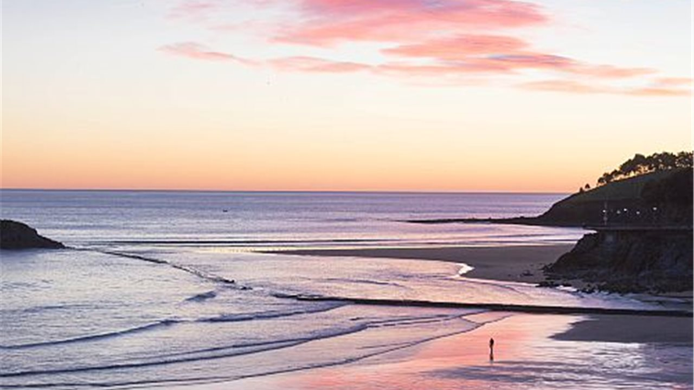

<!-- agrega bordes arriba, abajo, derecha, izquierda -->
<div class="row">
    <div class="border"></div>
    <div class="border-top"></div>
    <div class="border-end"></div>
    <div class="border-bottom"></div>
    <div class="border-start"></div>
</div>
<!-- agrega bordes de colores -->
<div class="row">
    <div class="border border-primary"></div>
    <div class="border border-secondary"></div>
    <div class="border border-success"></div>
    <div class="border border-danger"></div>
    <div class="border border-warning"></div>
    <div class="border border-info"></div>
    <div class="border border-light"></div>
    <div class="border border-dark"></div>
</div>

<!-- agrega grosor de los bordes -->
<div class="row">
    <div class="border border-1"></div>
    <div class="border border-2"></div>
    <div class="border border-3"></div>
    <div class="border border-4"></div>
    <div class="border border-5"></div>
</div>

<!-- crea imagenes redondeadas en las puntas -->
<div class="row">
    
    
    
    
    
    
    
</div>

<!-- redondea las puntas con mayor densidad -->
<div class="row">
    
    
    
    
</div>